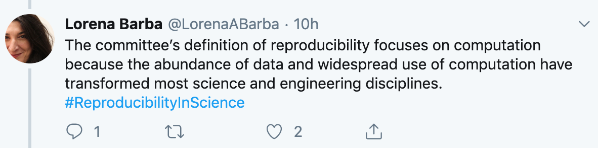
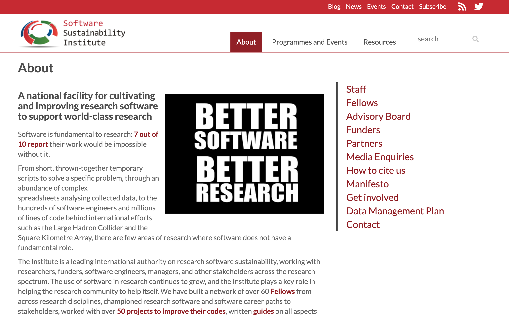
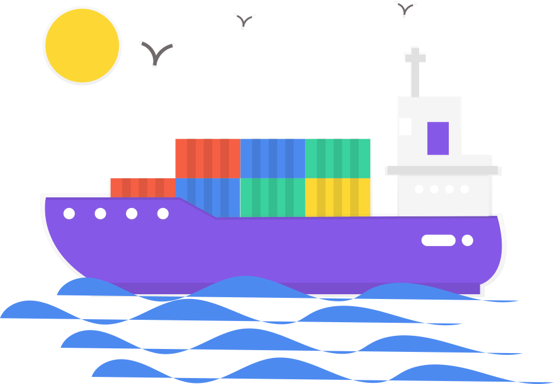
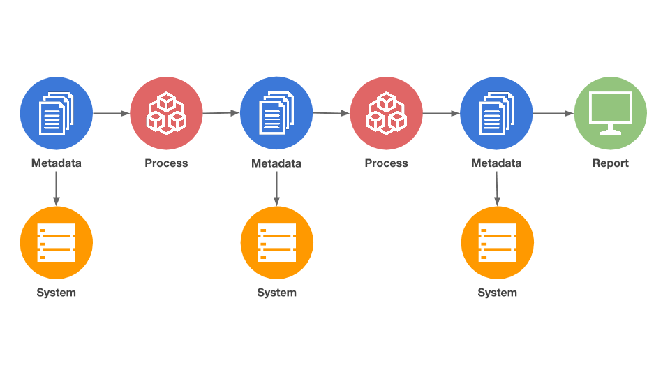
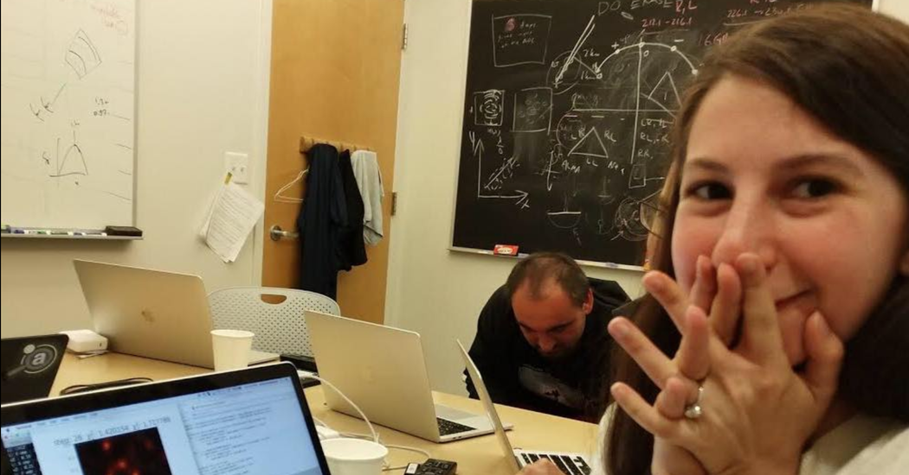

Science and research have changed
- Access to more data and data sources
- Better collection tools/approaches
- Better and cheaper compute
- Compute driven research
This change in research helped shed light on the
reproducibility crisis
chronic problem
The 'reproducibility crisis' led to some good outcomes
Adversity as an agent of change
✊🏿✊🏻✊🏾
✊🏿✊🏻✊🏾
What has happened since then?
Increased awareness on reproducibility matters
Digital assets are finally gaining some recognition


Nailing the basics
What do we need to take care of?
- Code / software
- Computational environment
- Data
Code


Widespread introduction of best practices and peer review processes.
Infrastructure

We're getting there
- Institutional buy-in
- HPC infrastructure- PI level buy-in
- OSS- Binder/Jupyter
- Adapt to change
Data
Some good...
- Data management and archiving
- Funding agencies are requesting open data sets
But it is not enough
Metadata
- Mandatory information about the data set
- Should answer: who, what, when, why?
Check http://www.dcc.ac.uk/resources/metadata-standards/list
Everyone and everything has a history...
Even your data
Data lineage
Reference to the data origins, what happens to it and where it moves over time.Gives visibility and the ability to trace back to errors in the data pipeline.
This is not data lineage...

Not only we have an overview of the data path but also of the processes and metadata

We establish a contract with the data across every single step of the pipeline.
We always know what we are expecting of the data at a given point.
How is this different from provenance?
Provenance refers to the combination of data lineage (origin, traceability, schemas/metadata) plus inputs and outputs that allow for reproducibility of the pipeline.What can be achieved with multiple data sources?

Katie Bouman, 2019
A real-life use case
Driving intelligence from multi-trust data sources using a Data Lake and Machine Learning.Collaboration among Imperial College London, Microsoft, and the NHS.
What does this entail?
- Provenance first approach
- Fully indexable and searchable
- Integration of a schema registry alongside the data
👉🏽 Pre-print soon to come
Over 20 projects will be using the generated data lake for multiple purposes:
from early sepsis diagnosis to better utilization of hospital resources.
Contracts are good...

It's time we start writing more contracts ✍️